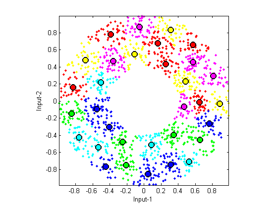

Vector Quantization
Vector quantization (VQ) can be viewed as an efficient techniques for k-means clustering, especially when the desired number of clusters is big. VQ is primarily designed for lossy data compression, particularly for image compression. A vanilla algorithm for VQ is:
- Set the number of clusters n = 1.
- Run k-means clustering with the number of clusters equal to n.
- If n is equal to or greater than the desired number of clusters, stop.
- Split each of the cluster centers into two by adding and subtracting a small random vector. Now n is twice the original value.
- Go back to the second step.
Contents
A basic example
The following example demonstrates the dendrogram after agglomerative hierarchical clustering.
DS=dcData(2); data=DS.input; codeBookSize=2^5; codebook=vecQuantize(data, codeBookSize);
No. of centers = 2, loop count = 6, distortion = 428.203 No. of centers = 4, loop count = 21, distortion = 158.479 No. of centers = 8, loop count = 20, distortion = 66.6857 No. of centers = 16, loop count = 37, distortion = 34.8209 No. of centers = 32, loop count = 15, distortion = 16.0443
Visualization of the clustering process
If you want to see the animation of the clustering process, try the next example:
DS=dcData(2); data=DS.input; codeBookSize=2^5; codebook=vecQuantize(data, codeBookSize, 1);
Iteration count = 1/200, distortion = 691.611116 Iteration count = 2/200, distortion = 417.476078 Iteration count = 3/200, distortion = 417.290672 Iteration count = 4/200, distortion = 416.986496 Iteration count = 5/200, distortion = 416.601803 Iteration count = 6/200, distortion = 416.166624 Iteration count = 7/200, distortion = 415.849953 Iteration count = 8/200, distortion = 415.555807 Iteration count = 9/200, distortion = 415.421391 Iteration count = 10/200, distortion = 415.365443 Iteration count = 11/200, distortion = 415.360992 Iteration count = 12/200, distortion = 415.346638 Iteration count = 13/200, distortion = 415.340240 Iteration count = 14/200, distortion = 415.336797 Iteration count = 15/200, distortion = 415.335031 Iteration count = 16/200, distortion = 415.335031 No. of centers = 2, loop count = 16, distortion = 415.335 Iteration count = 1/200, distortion = 415.335031 Iteration count = 2/200, distortion = 283.593638 Iteration count = 3/200, distortion = 157.555362 Iteration count = 4/200, distortion = 156.342249 Iteration count = 5/200, distortion = 156.063204 Iteration count = 6/200, distortion = 155.897988 Iteration count = 7/200, distortion = 155.724434 Iteration count = 8/200, distortion = 155.605325 Iteration count = 9/200, distortion = 155.399291 Iteration count = 10/200, distortion = 155.323689 Iteration count = 11/200, distortion = 155.319025 Iteration count = 12/200, distortion = 155.319025 No. of centers = 4, loop count = 12, distortion = 155.319 Iteration count = 1/200, distortion = 155.319025 Iteration count = 2/200, distortion = 81.671584 Iteration count = 3/200, distortion = 73.101167 Iteration count = 4/200, distortion = 69.789227 Iteration count = 5/200, distortion = 69.056740 Iteration count = 6/200, distortion = 68.885662 Iteration count = 7/200, distortion = 68.831688 Iteration count = 8/200, distortion = 68.805113 Iteration count = 9/200, distortion = 68.792270 Iteration count = 10/200, distortion = 68.789027 Iteration count = 11/200, distortion = 68.788005 Iteration count = 12/200, distortion = 68.788005 No. of centers = 8, loop count = 12, distortion = 68.788 Iteration count = 1/200, distortion = 68.788005 Iteration count = 2/200, distortion = 41.408745 Iteration count = 3/200, distortion = 40.231598 Iteration count = 4/200, distortion = 39.632713 Iteration count = 5/200, distortion = 39.036141 Iteration count = 6/200, distortion = 38.519786 Iteration count = 7/200, distortion = 37.932107 Iteration count = 8/200, distortion = 37.397182 Iteration count = 9/200, distortion = 36.950676 Iteration count = 10/200, distortion = 36.651149 Iteration count = 11/200, distortion = 36.457752 Iteration count = 12/200, distortion = 36.314889 Iteration count = 13/200, distortion = 36.254345 Iteration count = 14/200, distortion = 36.230323 Iteration count = 15/200, distortion = 36.203576 Iteration count = 16/200, distortion = 36.193489 Iteration count = 17/200, distortion = 36.187849 Iteration count = 18/200, distortion = 36.185944 Iteration count = 19/200, distortion = 36.185944 No. of centers = 16, loop count = 19, distortion = 36.1859 Iteration count = 1/200, distortion = 36.185944 Iteration count = 2/200, distortion = 22.464215 Iteration count = 3/200, distortion = 20.859930 Iteration count = 4/200, distortion = 19.731841 Iteration count = 5/200, distortion = 18.240662 Iteration count = 6/200, distortion = 17.451923 Iteration count = 7/200, distortion = 17.199904 Iteration count = 8/200, distortion = 16.996129 Iteration count = 9/200, distortion = 16.856346 Iteration count = 10/200, distortion = 16.778240 Iteration count = 11/200, distortion = 16.729674 Iteration count = 12/200, distortion = 16.699396 Iteration count = 13/200, distortion = 16.685093 Iteration count = 14/200, distortion = 16.672753 Iteration count = 15/200, distortion = 16.662450 Iteration count = 16/200, distortion = 16.654783 Iteration count = 17/200, distortion = 16.642651 Iteration count = 18/200, distortion = 16.630944 Iteration count = 19/200, distortion = 16.611577 Iteration count = 20/200, distortion = 16.559080 Iteration count = 21/200, distortion = 16.533710 Iteration count = 22/200, distortion = 16.518239 Iteration count = 23/200, distortion = 16.515601 Iteration count = 24/200, distortion = 16.515601 No. of centers = 32, loop count = 24, distortion = 16.5156
Reference
Y. Linde, A. Buzo, and R.M. Gray, "An Algorithm for Vector Quantizer Design", IEEE Transactions on Communications, vol. 28, pp. 84-94, 1980.
Copyright 2011-2012 Jyh-Shing Roger Jang.